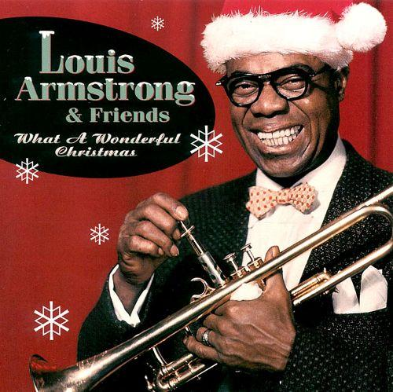

tags: Christmas, connection, love
2 min read

As long as we're enjoying a “Holiday in Harlem” with Ella, we may as well stick around a little longer for a “Christmas Night in Harlem” with Louis Armstrong.
Every gal struttin' with her beau
Through the streets covered white with snow,
Happy smiles everywhere you go:
It's Christmas night in Harlem.People all feeling mighty good
In that good old neighborhood.
Here and now be it understood:
Christmas night in Harlem.Everyone is gonna sit up
Until after three.
Everyone will be all lit up,
Like a Christmas tree.Come on now, every Jane and Joe,
Greet your sweet 'neath the mistletoe,
With a kiss and a hi-de-ho:
Christmas night in Harlem.
Composer Raymond Scott wrote the music for this tune, and Mitchell Parish wrote the lyrics. The song was written in 1934, but it was not until 1955 that Louis Armstrong recorded the definitive version with the Benny Carter Orchestra.
The lyrics above are taken from the Armstrong version recorded in 1955. Comparing this to earlier versions reveals some interesting changes in the lyrics: “Black and tans feeling might good” becomes “People all feeling might good”; “in that old colored neighborhood” becomes “in that good old neighborhood”; and “Come on now every coal black joe” is changed to “Come on now every Jane and Joe”.
By 1955, of course, and certainly for today's audiences, the changes in the lyrics are welcome. But Armstrong transforms the song in other ways as well, and entirely for the better. His vocals are warm and relaxed and gently swinging; he graces the song with a lovely solo on trumpet as well as a bit of scat singing; and the backing instrumentation is perfect.
If the promise of Christmas is to restore for us a certain unbroken wholeness, then this recording certainly accomplishes that mission, making us feel warm and welcome as part of a cohesive human community.
Next: “Christmas Bells” by John Gorka
Or see the complete list of Christmas Favorites from The Practical Utopian.